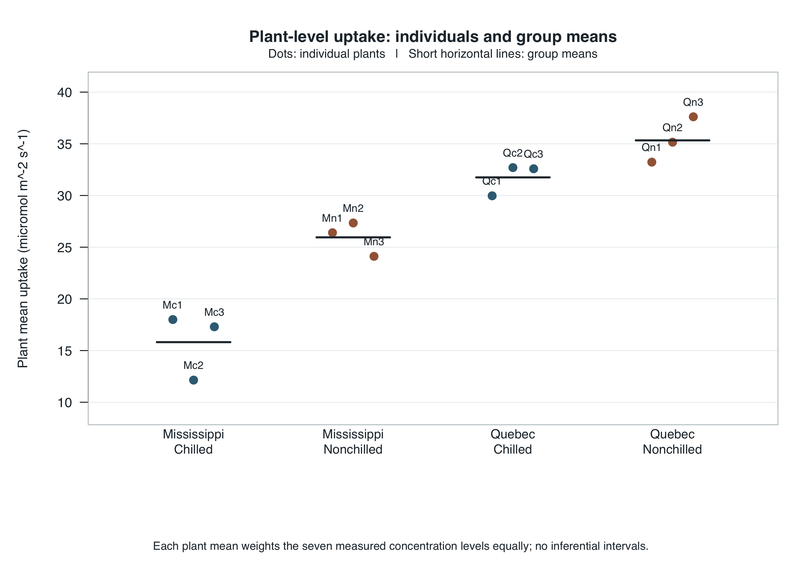

What the data show
Across seven equally weighted CO₂ concentrations, mean uptake was lower in chilled plants in both samples. The chilled-minus-nonchilled contrast was −10.14 in Mississippi and −3.58 in Québec, in micromoles per square metre per second. These describe differences between groups of plants—not paired changes within plants. With only three plants per group, the larger Mississippi contrast is a feature of this sample, not evidence establishing a population-level difference.
A larger contrast in the Mississippi plants
Each plant’s summary is the arithmetic mean of its seven uptake measurements, giving every tested concentration equal weight. Averaging those plant means gives chilled and nonchilled values of 15.81 and 25.95 for Mississippi, compared with 31.75 and 35.33 for Québec. Subtracting nonchilled from chilled yields −10.14 and −3.58, respectively. Uptake units follow R’s help page: micromoles per square metre per second.
Individual plants remain visible in this comparison. Mississippi chilled means were Mc1 18.00, Mc2 12.14, and Mc3 17.30; nonchilled means ranged from 24.11–27.34. Québec chilled means ranged from 29.97–32.70, versus 33.23–37.61 for nonchilled plants. These summaries describe rates across the chosen concentrations; they are neither paired treatment changes nor time-integrated carbon uptake.


Cold exposure, then recovery, then measurement
The experiment’s timing matters: these were measurements after chilling and recovery, not measurements during cold exposure. The original article describes fourteen hours of daytime chilling at 7°C, followed by ten hours of nighttime recovery at 20°C; leaf measurements were then made at 26°C. By contrast, R’s help page describes overnight chilling. That documentary discrepancy remains unresolved here.
The supplied data contain eighty-four rows from twelve plants, with seven repeated measurements per plant. Each Québec or Mississippi treatment group contains three plants. The article reports that concentrations were presented consecutively in increasing order. Thus, the records trace individual plants across a concentration sequence rather than representing eighty-four independent experimental subjects.

Every plant keeps its own curve
The mean profiles generally rise as stored concentration increases, although individual plants do not rise at every step. At 95.00, Mississippi chilled and nonchilled means are 9.60 and 11.30; at 1000.00, they are 18.73 and 31.60. Québec means at those same endpoints are 12.87 versus 15.27, and 40.83 versus 43.17. The Mississippi groups therefore show greater separation toward the upper end, helping explain their larger across-concentration contrast.
The horizontal scale needs an explicit qualification. The printed R units attribute says (uL/L), while the help page labels concentration mL/L. This is a metadata disagreement, not a conversion performed or resolved by the run. Concentration numbers remain exactly as stored; their physical units are unresolved here. These are observed profiles, not fitted response limits.

What this experiment cannot settle
Three plants per group support descriptive comparisons only here; no significance tests or confidence intervals were produced. The larger Mississippi contrast does not establish a population-wide causal difference or geographic adaptation. Nor do these post-recovery measurements establish irreversible injury, a biochemical explanation, or carbon storage.
The article reports random pairing of control and chilling-designated plants, but the supplied outputs provide no plant-pair mapping. Matching identifier suffixes would invent information, so this comparison retains individual plant identities without calculating paired differences. Also, concentration and measurement order advance together: the profiles cannot separate their contributions. This edition is a derived synthesis of the completed briefing and executed outputs, not a new accepted research product.
Explore the evidence and reproduce the analysis
How this report was produced
Tempest ran live research, exact-passage verification and scientific review using gpt-6.1-sol. The same model proposed the R analysis, revised its export formats after code review, and wrote this reader edition from the actual computed outputs. No authored replay or simulated measurements were supplied.
The R code ran in a fresh Deputy RSession against the installed datasets::CO2. The illustration was generated separately with gpt-image-2.6-flare and is a conceptual schematic. It does not depict experimental observations.
This reader edition is a derived synthesis. The linked evidence briefing and integrity-checked enrichment bundle remain separate. The original scanned paper was captured with OCR; transcription errors remain possible.